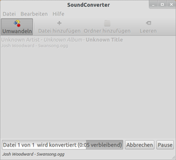
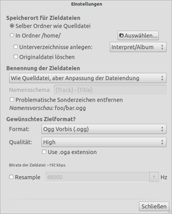

Soundconverter
Dieser Artikel wurde für die folgenden Ubuntu-Versionen getestet:
Ubuntu 16.04 Xenial Xerus
Ubuntu 14.04 Trusty Tahr
Zum Verständnis dieses Artikels sind folgende Seiten hilfreich:
Soundconverter  dient der Konvertierung von Audiodateien von einem Format in ein anderes. Das Programm bietet eine einfache, selbsterklärende Oberfläche, kann aber auch per Kommandozeile genutzt werden. Durch der Verwendung von GStreamer ist Soundconverter in der Lage, eine sehr große Palette an Audio-, Video- und Container-Formaten zu lesen. Umgewandelt wird wahlweise in Vorbis, MP3, FLAC oder RIFF WAVE. Über entsprechende Knöpfe im Programmhauptfenster werden dann einzelne Dateien oder ganze Ordner zur Umwandlung ausgewählt.
dient der Konvertierung von Audiodateien von einem Format in ein anderes. Das Programm bietet eine einfache, selbsterklärende Oberfläche, kann aber auch per Kommandozeile genutzt werden. Durch der Verwendung von GStreamer ist Soundconverter in der Lage, eine sehr große Palette an Audio-, Video- und Container-Formaten zu lesen. Umgewandelt wird wahlweise in Vorbis, MP3, FLAC oder RIFF WAVE. Über entsprechende Knöpfe im Programmhauptfenster werden dann einzelne Dateien oder ganze Ordner zur Umwandlung ausgewählt.
Verfügt das System über einen Mehrkern-Prozessor, nutzt Soundconverter diesen effizient, indem mehrere Umwandlungsprozesse auf einmal gestartet werden. Das fast identisch geschriebene Programm soundKonverter richtet sich an Nutzer der Desktop-Umgebung KDE.
Installation¶
 Folgende Pakete müssen installiert [1] werden:
soundconverter (universe)
 mit apturl
mit apturl
Paketliste zum Kopieren:
sudo apt-get install soundconverter
sudo aptitude install soundconverter
Je nach dem, welche Dateiformat man schreiben (und lesen) möchte, werden zusätzlich Pakete mit Codecs benötigt.
Ubuntu 16.04¶
gstreamer1.0-plugins-ugly (universe, für Unterstüzung von mp3 )
mit apturl
Paketliste zum Kopieren:
sudo apt-get install gstreamer1.0-plugins-ugly
sudo aptitude install gstreamer1.0-plugins-ugly
Ubuntu 14.04¶
gstreamer0.10-plugins-ugly (universe)
gstreamer0.10-plugins-bad-multiverse (multiverse, für Unterstützung von AAC)
libavcodec-extra-54 (universe)
mit apturl
Paketliste zum Kopieren:
sudo apt-get install gstreamer0.10-plugins-ugly gstreamer0.10-plugins-bad-multiverse libavcodec-extra-54
sudo aptitude install gstreamer0.10-plugins-ugly gstreamer0.10-plugins-bad-multiverse libavcodec-extra-54
Bedienung¶
Achtung!
Das Umwandeln von einem verlustbehafteten Audioformat in ein anderes verringert immer die Qualität. Siehe dazu: Generationsverlust.
Nach der Installation kann soundconverter gestartet werden [3]
| Bedienung | ||
| Schaltfläche | Text | Beschreibung |
| "Datei hinzufügen" | Fügt ein ganzes Verzeichnis- samt aller Unterverzeichnisse der Liste hinzu. | |
| "Umwandeln" | Wandelt die Dateien gemäß den unter "Bearbeiten → Einstellungen" vorgenommenen Einstellungen um. | |
 | "Leeren" | Leert die Liste ausgewählter Dateien. Alternativ kann
Strg +
A und dann
Entf gedrückt werden. Um nur ein einzelnes Lied aus der Liste zu entfernen dient Entf . |
Über das Kontext-Menü¶
Durch die Auswahl von "Öffnen mit" im Kontextmenü von Dateien können diese mit Soundconverter geöffnet werden.
Auf der Kommandozeile¶
Mit der Kommandozeilen-Option -b wird Soundconverter im Batch-Modus gestartet, was praktisch ist, um es in Shell-Skripten zu verwenden. Über die Optionen -m (MIME-Typ) und -s (Dateiendung; Suffix) wird das Ausgabeformat angegeben.
Beispiele¶
Eine Datei ins MP3-Format konvertieren:
soundconverter -b -m "audio/mpeg" -s ".mp3" /PFAD/ZUR/DATEI/DATEI
Alle Dateien eines Verzeichnisses ins MP3-Format konvertieren:
soundconverter -b -m "audio/mpeg" -s ".mp3" /PFAD/ZUM/VERZEICHNIS/VERZEICHNIS/*.DATEIENDUNG
Unterstützte Dateitypen¶
Soundconverter kann alle Formate lesen, die vom GStreamer-Framework unterstüzt werden: Ogg Vorbis, AAC, MP3, FLAC, WAV, AVI, MPEG, MOV, M4A, AC3, DTS, ALAC, MPC, Shorten, APE, SID, MOD, XM, S3M, etc.. Bei gewählten Videoformaten wird automatisch die Tonspur extrahiert.
Als Zielformate dienen jedoch nur die geläufigsten:
| Zielformate | |||
| Dateityp | MIME-Typ | Dateiendung | Beschreibung |
| MP3 | audio/mpeg | .mp3 | verlustbehaftet, starke Komprimierung, weit verbreitet, patentbehaftet |
| Ogg Vorbis | audio/ogg | .ogg, .oga | verlustbehaftet, starke Komprimierung, mittelmäßig verbreitet, freie Software |
| AAC | audio/aac | .m4a, .aac | verlustbehaftet, starke Komprimierung, weit verbreitet (Apple, Sony, ...), patentbehaftet |
| RIFF WAVE | audio/x-wav | .wav | verlustfrei, schwache Komprimierung, weit verbreitet |
| FLAC | audio/x-flac | .flac | verlustfrei, mittelmäßige Komprimierung, mittelmäßig verbreitet, freie Software |
Einstellungen¶
Unter "Bearbeiten → Einstellungen" öffnet sich ein Fenster, in dem man verschiedene Einstellungen zum Konvertieren vornehmen kann: 
"Speicherort für Zieldateien" - Hier wird festgelegt, wo die umgewandelten Dateien abgespeichert werden sollen. "Selber Ordner wie Quelldatei" speichert eine umgewandelte Datei dort ab, wo das Original lag. Über den Knopf "Auswählen" kann aber auch ein Verzeichnis ausgewählt werden, in dem alle umgewandelten Dateien abgelegt werden sollen. Durch Aktivieren von "Unterverzeichnisse anlegen" können die umgewandelten Lieder auch anhand ihrer ID3-Tags in separate Unterordner verschoben werden. Durch Aktivieren der Schaltfläche "Originaldatei löschen" wird das Original der umgewandelten Datei nach dem Vorgang automatisch gelöscht.
"Benennung der Zieldatei" - Durch das Dropdown-Menü können voreingestellte Benennungs-Schemata ausgewählt werden und über "Benutzerdefiniertes Dateinamesschema" kann ein eigenes erstellt werden, wobei die drei Schlüsselwörter
{Artist},{Title}und{Track}zur Verfügung stehen."Gewünschtes Zielformat" - Hier kann auswählt werden, in welches Format die Lieder umgewandelt werden sollen. Bietet das ausgewählte Format weitere Konfigurationsmöglichkeiten, wie bspw. Qualität, können diese hier auch festgelegt werden.
Problembehebung¶
Wenn sich das Programm während des Konvertierens schließt¶
Schließt sich das Programm während des Konvertierens, kann es helfen, in "Bearbeiten → Einstellungen" unter "Speicherort für Zieldateien" die Funktion "Originaldatei löschen" zu deaktivieren. Die Dateien müssten nach dem Konvertieren dann manuell gelöscht werden.
 Übersichtsartikel
Übersichtsartikel- Erstellt mit Inyoka
-
 2004 – 2017 ubuntuusers.de • Einige Rechte vorbehalten
2004 – 2017 ubuntuusers.de • Einige Rechte vorbehalten
Lizenz • Kontakt • Datenschutz • Impressum • Serverstatus -
Serverhousing gespendet von